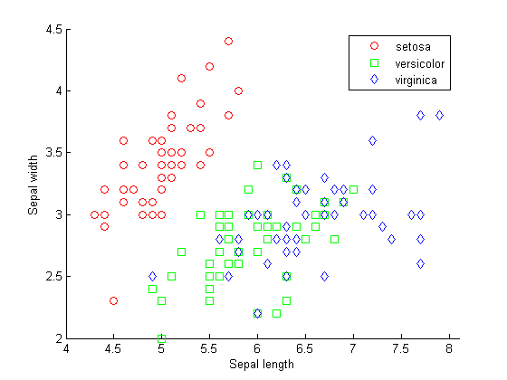
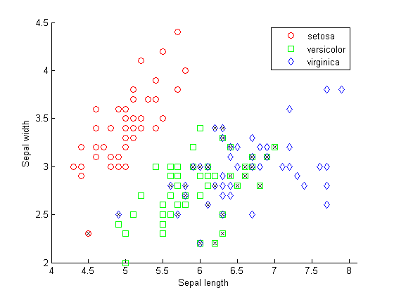
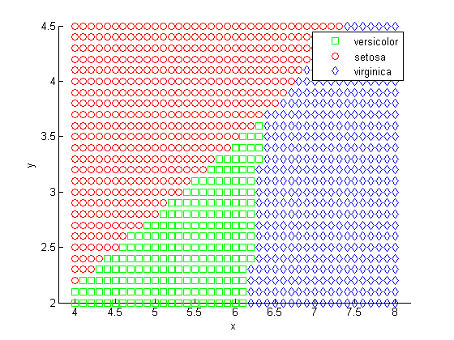
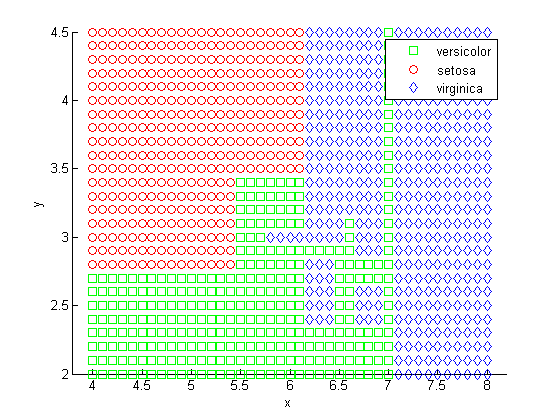
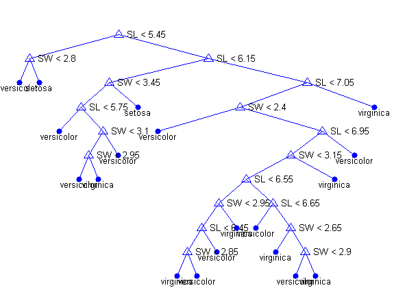
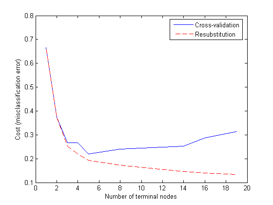
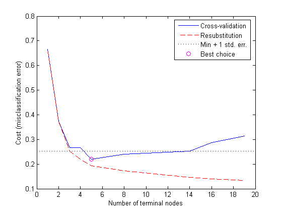
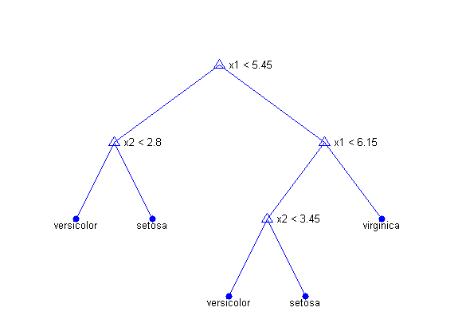

Suppose we have a data set containing measurements on several variables for indivividuals in several groups. If we obtained measurements for more individuals, could we determine to which groups those individuals probably belong? This is the problem of classification. This demonstration illustrates classification by applying it to Fisher's iris data, using the Statistics Toolbox.
Fisher's iris data consists of measurements on the sepal length, sepal width, petal length, and petal width of 150 iris specimens. There are 50 specimens from each of three species. We load the data and see how the sepal measurements differ between species. We use just the two columns containing sepal measurements.
load fisheriris gscatter(meas(:,1), meas(:,2), species,'rgb','osd'); xlabel('Sepal length'); ylabel('Sepal width');
Suppose we measure a sepal and petal from an iris, and we need to determine its species on the basis of those measurements. One approach to solving this problem is known as discriminant analysis.
The CLASSIFY function can perform classification using different types of discriminant analysis. First we classify the data using the default linear method.
linclass = classify(meas(:,1:2),meas(:,1:2),species); bad = ~strcmp(linclass,species); numobs = size(meas,1); sum(bad) / numobs
ans =
0.2000
Of the 150 specimens, 20% or 30 specimens are misclassified by the linear discriminant function. We can see which ones they are by drawing X through the misclassified points.
hold on; plot(meas(bad,1), meas(bad,2), 'kx'); hold off;
The function has separated the plane into regions divided by lines, and assigned different regions to different species. One way to visualize these regions is to create a grid of (x,y) values and apply the classification function to that grid.
[x,y] = meshgrid(4:.1:8,2:.1:4.5); x = x(:); y = y(:); j = classify([x y],meas(:,1:2),species); gscatter(x,y,j,'grb','sod')
For some data sets, the regions for the various groups are not well separated by lines. When that is the case, linear discriminant analysis is not appropriate. We can re-compute the proportion of misclassified observations using quadratic discriminant analysis.
quadclass = classify(meas(:,1:2),meas(:,1:2),species,'quadratic');
bad = ~strcmp(quadclass,species);
sum(bad) / numobs
ans =
0.2000
We don't bother to visualize the regions by classifying the (x,y) grid, because it is clear that quadratic discriminant analysis does no better than linear discriminant analysis in this example. Each method misclassifies 20% of the specimens. In fact, 20% may be an underestimate of the proportion of misclassified items that we would expect if we classified a new data set. That's because the discriminant function was chosen specifically to classify this data set well. We'll visit this issue again in the next section.
Both linear and quadratic discriminant analysis are designed for situations where the measurements from each group have a multivariate normal distribution. Often that is a reasonable assumption, but sometimes you may not be willing to make that assumption or you may see clearly that it is not valid. In these cases a nonparametric classification procedure may be more appropriate. We look at such a procedure next.
Another approach to classification is based on a decision tree. A decision tree is a set of simple rules, such as "if the sepal length is less than 5.45, classify the specimen as setosa." Decision trees do not require any assumptions about the distribution of the measurements in each group. Measurements can be categorical, discrete numeric, or continuous.
The TREEFIT function can fit a decision tree to data. We create a decision tree for the iris data and see how well it classifies the irises into species.
tree = treefit(meas(:,1:2), species); [dtnum,dtnode,dtclass] = treeval(tree, meas(:,1:2)); bad = ~strcmp(dtclass,species); sum(bad) / numobs
ans =
0.1333
The decision tree misclassifies 13.3% or 20 of the specimens. But how does it do that? We use the same technique as above to visualize the regions assigned to each species.
[grpnum,node,grpname] = treeval(tree, [x y]); gscatter(x,y,grpname,'grb','sod')
Another way to visualize the decision tree is to draw a diagram of the decision rule and group assignments.
treedisp(tree,'name',{'SL' 'SW'})
This cluttered-looking tree uses a series of rules of the form "SL < 5.45" to classify each specimen into one of 19 terminal nodes. To determine the species assignment for an observation, we start at the top node and apply the rule. If the point satisfies the rule we take the left path, and if not we take the right path. Ultimately we reach a terminal node that assigned the observation to one of the three species.
It is usually possible to find a simpler tree that performs as well as, or better than, the more complex tree. The idea is simple. We have found a tree that classifies one particular data set well. We'd like to know the "true" error rate we would incur by using this tree to classify new data. If we had a second data set, we would be able to estimate the true error by classifying that the second data set directly. We could do this for the full tree and for subsets of it. Perhaps we'd find that a simpler subset gave the smallest error, because some of the decision rules in the full tree hurt rather than help.
In our case we don't have a second data set, but we can simulate one by doing cross-validation. We remove a subset of 10% of the data, build a tree using the other 90%, and use the tree to classify the removed 10%. We could repeat this by removing each of ten subsets one at a time. For each subset we may find that smaller trees give smaller error than the full tree.
Let's try it. First we compute what is called the "resubstitution error," or the proportion of original observations that were misclassified by various subsets of the original tree. Then we use cross-validation to estimate the true error for trees of various sizes. A graph shows that the resubstitution error is overly optimistic. It decreases as the tree size grows, but the cross-validation results show that beyond a certain point, increasing the tree size increases the error rate.
resubcost = treetest(tree,'resub'); [cost,secost,ntermnodes,bestlevel] = treetest(tree,'cross',meas(:,1:2),species); plot(ntermnodes,cost,'b-', ntermnodes,resubcost,'r--') figure(gcf); xlabel('Number of terminal nodes'); ylabel('Cost (misclassification error)') legend('Cross-validation','Resubstitution')
Which tree should we choose? A simple rule would be to choose the tree with the smallest cross-validation error. While this may be satisfactory, we might prefer to use a simpler tree if it is roughly as good as a more complex tree. The rule we will use is to take the simplest tree that is within one standard error of the minimum. That's the default rule used by the TREETEST function.
We can show this on the graph by computing a cutoff value that is equal to the minimum cost plus one standard error. The "best" level computed by the TREETEST function is the smallest tree under this cutoff. (Note that bestlevel=0 corresponds to the unpruned tree, so we have to add 1 to use it as an index into the vector outputs from TREETEST.)
[mincost,minloc] = min(cost); cutoff = mincost + secost(minloc); hold on plot([0 20], [cutoff cutoff], 'k:') plot(ntermnodes(bestlevel+1), cost(bestlevel+1), 'mo') legend('Cross-validation','Resubstitution','Min + 1 std. err.','Best choice') hold off
Finally, we can look at the pruned tree and compute the estimated misclassification cost for it. We can see that it is somewhat larger than the 20% value from the discriminant analysis.
prunedtree = treeprune(tree,bestlevel); treedisp(prunedtree)
cost(bestlevel+1)
ans =
0.2200
This demonstration shows how to perform classification in MATLAB using Statistics Toolbox functions for discriminant analysis and classification trees.
This demonstration is not meant to be an ideal analysis of the Fisher iris data. In fact, using the petal measurements instead of, or in addition to, the sepal measurements leads to better classification. You may find it instructive to repeat the analysis using the petal measurements.